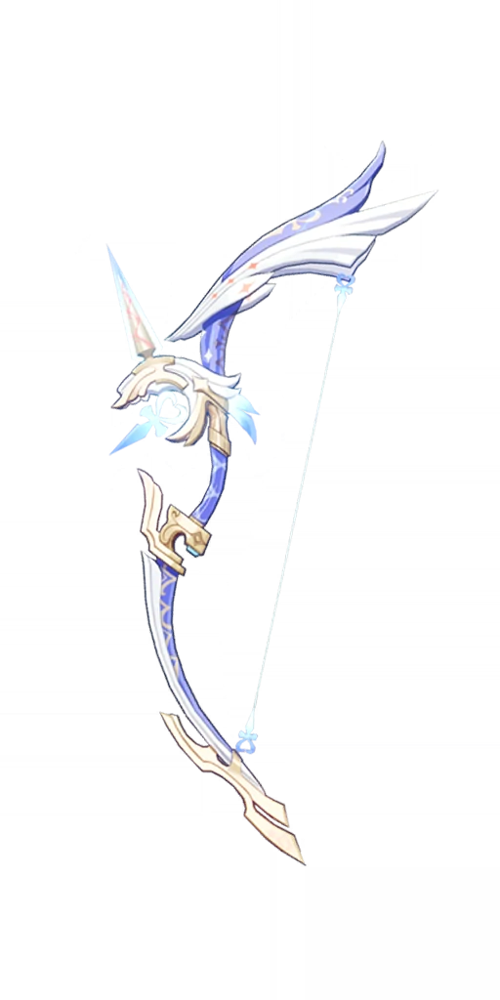
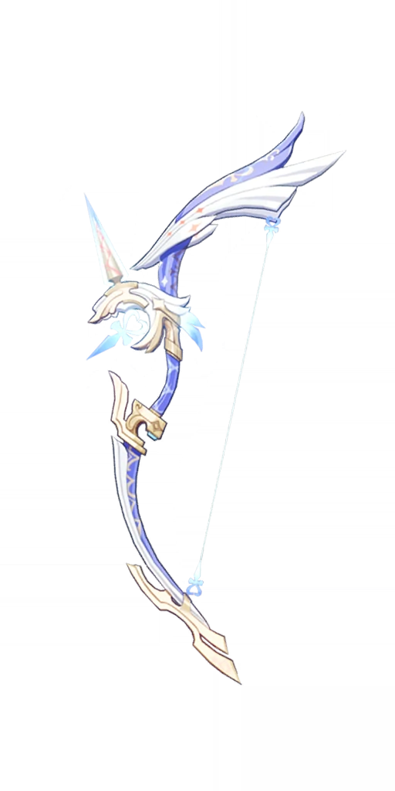

Ganyu
Plenilune Gaze.
Plenilune Gaze.
 


Normal Attack: Perform up to 6 consecutive shots with a bow.
Charged Attack: Perform a more precise Aimed Shot with increased DMG. While aiming, an icy aura will
accumulate on the arrowhead before the arrow is fired. Has different effects based on how long the
energy has been charged:
Charge Level 1: Fires off an icy arrow that deals Cryo DMG.
Charge Level 2: Fires off a Frostflake Arrow that deals Cryo DMG.
The Frostflake Arrow blooms after hitting its target, dealing AoE Cryo DMG.
Plunging Attack: Fires off a shower of arrows in mid-air before falling and striking the ground,
dealing AoE DMG upon impact.
Leaving a single Ice Lotus behind, Ganyu dashes backward, shunning all impurity and dealing AoE Cryo
DMG.
Ice Lotus:
Continuously taunts surrounding opponents, attracting them to attack it.
Endurance scales based on Ganyu's Max HP.
Blooms profusely when destroyed or once its duration ends, dealing AoE Cryo DMG.
Coalesces atmospheric frost and snow to summon a Sacred Cryo Pearl that exorcises evil.
During its ability duration, the Sacred Cryo Pearl will continuously rain down shards of ice,
striking opponents within an AoE and dealing Cryo DMG.
After firing a Frostflake Arrow, the CRIT Rate of subsequent Frostflake Arrows and their resulting bloom effects is increased by 20% for 5s.
Celestial Shower grants a 20% Cryo DMG Bonus to active members in the AoE.
Refunds 15% of the ores used when crafting Bow-type weapons.